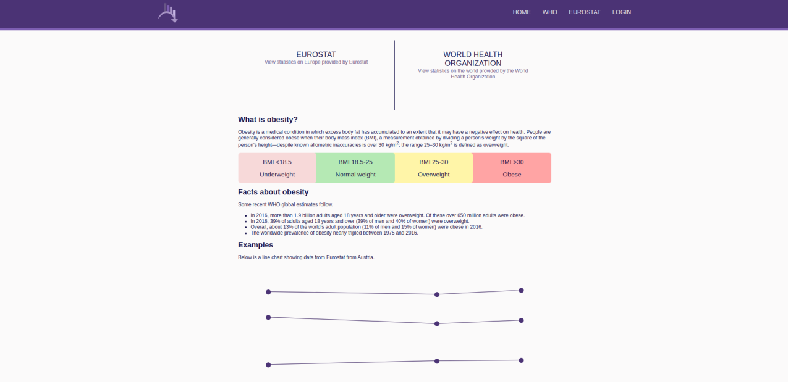
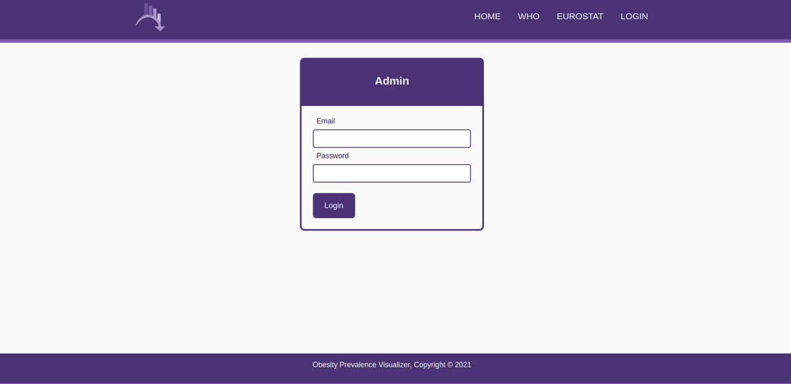
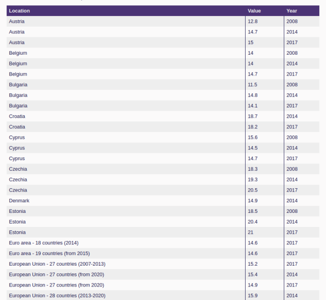
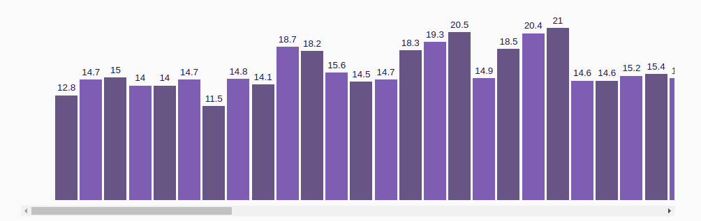

Obesity Prevalence Visualizer
IEEE Requirements Specification
Authors
- Mihăeș Antonio
- Stoleriu Daniel
Introduction
Purpose
The aim of this system requirements specification document is to provide an in-depth description of the tool Obesity Prevalence Visualizer. This document will explain the features and the purpose of this software.
Intended Audience and Reading Suggestions
The audience of this document are other developers who may be interested in contributing to this tool or basing their work on it. This document may also be of use to users of this software.
Product Scope
Obesity Prevalence Visualizer is a website that allows users to view statistics related to the body mass index. These statistics are gathered from external sources. This tool allows users to visualize this data in various different forms and to export them in different file formats. Users may also make use of a REST API.
References
Overall Description
Product Perspective
Obesity Prevalence Visualizer is a website that offers statistics about the body mass index in various countries and regions around the world. These statistics can be visualized as tables, line charts and bar charts. The two sources of the data are Eurostat and the World Health Organization.
Product Functions
-
Home page
- Provides a short description of the website.
- Presents the various formats in which statistics can be visualized.
-
Administration
- An administrator can authenticate in order to gain access to the administration panel.
- Update and delete the stored data from Eurostat and the World Health Organization.
- Change their account information.
-
Table visualizer
- Select which columns are shown.
- Select the ordering of the rows.
- Select only the rows which have one particular value on a certain column.
-
Bar chart visualizer
- Select which attributes are shown for each bar.
- Select the ordering of the bars.
- Select data which has one particular attribute.
-
Line chart
- The x axis represents the years, and the y axis the body mass index.
- Select data which has one particular attribute.
User Classes and Characteristics
- Regular users who do not need any kind of authentication and want to view the statistics offered on the site.
- The administrator who need authentication and want to update or remove the data stored.
Operating Environment
This website can be hosted on any kind of operating system that can run PHP: Unix-like operating systems, Windows and macOS. The website can be accessed from any device, including mobile ones, that has a modern web browser.
Design and Implementation Constraints
This software is developed using PHP, HTML and CSS. The data is stored in a SQLite database. The project is structured using the model-view-controller design pattern.
Assumptions and Dependencies
The site depends on PHP 8 and a web server such as Apache or nginx.
External Interface Requirements
User Interfaces
-
Home page

-
Login page
 -
Administration panel

-
Table visualizer
 -
Bar chart visualizer
 -
Line chart visualizer

Software Interfaces
This tool requires on the server side PHP 8 with the Curl and multi-byte string extensions enables. SQLite version 3 is also required to store the data.
Communication Interfaces
The web pages are transferred over HTTP/HTTPS. For authentication HTTPS is preferred in order prevent attacks. The data gathered from Eurostat and the World Health Organization is gathered through their respective REST API which server JSON documents. This site's REST API functions the same way.
System Features
Authentication
The user can enter their username and password. After pressing the login button the server will validate their request and if successful they can access the administration panel.
Administration
Two buttons used for clearing and updating data are provided for both sources, Eurostat and the World Health Organization.
Bar Chart Visualization
The statistics that are shown can be configured by selecting the attributes, the order and data that has an attribute of a certain value. The user can select a certain bar to show a popup showing more information.
Table Visualization
The configuration acts the same way as in the previous section, but it is shown as a table.
Line Chart Visualization
The only configuration that can be done is selecting which attributes are shown and selecting data with an attribute of a certain value. The points are ordered chronologically.
Other Nonfunctional Requirements
Performance Requirements
In terms of memory this tool requires at least 512M of RAM to be able to parse and insert the JSON file provided by the World Health Organization which has a size of a few tens of megabytes.
Safety Requirements
The data can be safely redownloaded from the the sources in case of a system failure.
Security Requirements
No data is stored or gathered from ordinary users, so there are no system requirements for them. The administrator needs to insert their authentication information so HTTPS would be a requirement in case the administration panel is used.
Software Quality Attributes
Besides the various way to visualize the data, the site is responsive and can be used on devices with small screens such as tablets or smartphones. The home page is useful for showing the users the features of the tool.
Responsibilities
Mihăeș Antonio
-
Done
- Bar chart
- Line chart
- Table
- Home page, charts and navigation bar responsiveness
- Database gathering from Eurostat and WHO
- Accordion
-
To do
- Provide functionality to select shown data
- Provide functionality to select which kind of data visualization to use
- Error pages
Stoleriu Daniel
-
Done
- Home page
- Administration page
- Login page
- Design
- Administration page and notification page responsiveness
- Project structure refactoring in line with MVC pattern
-
To do
- Administrator authentication
- Session storage
- Statistics storage functionality provided to administrator